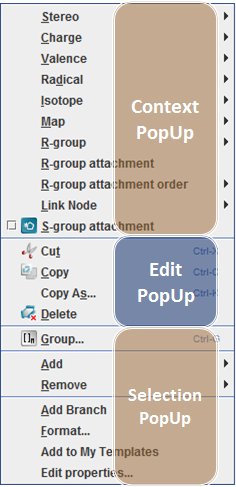

There are four pop-up menus (also called context or right-click menus) available in MarvinSketch:
These popup menus do not require the corresponding atom, bond or object to be selected, however there are some additional menu elements that appear only when they are selected.
Please note that when a pop-up menu appears, it is usually the combination of these menus. For example when selecting an atom and pressing the right mouse button, a popup menu appears that contains elements of the context pop-up menu,in this case the Atom Pop-up Menu, the Edit Pop-up Menu, and the Selection Pop-up Menu.
The Atom pop-up menu appears when you right-click on an atom on the canvas. It contains options for atom-specific activities that also can be accessed from the Atom Menu.
Menu Item |
Description |
|---|---|
Stereo |
Assigns reaction stereo labels or enhanced stereo labels to atoms. See the Enhanced stereo specification for details. |
Charge |
Applies a charge between [-128,128] to the atom. Marvin will let you set any of these values on any atom, highlighting the Valence Errors in red upon completion. In other words, Marvin will allow you to set a charge of -5 on hydrogen, despite the fact that this is chemically impossible. |
Valence |
Allows you to change the valence of any atom between [0, 8]. |
Radical |
Sets the selected atom as a radical. You can select the type of radical - monovalent, divalent, divalent singlet, divalent triplet, trivalent, trivalent doublet, trivalent quartet. The Off option removes the radical designation. |
Isotope |
The Isotope submenu contains a list of the isotopes of the selected element, dynamically generated based on the selected atom. Select an isotope to set or change the isotope number or choose Off to reset the default atom type (no isotope). |
Map |
Set map labels/identifiers on the selected atoms that do not change while altering the molecule. They are useful when dealing with reactions, and can be saved in SMILES and MDL formats. |
| R-group |
Changes the selected atom to an R-group label. R-groups symbolize alternative substituents. |
| R-group attachment |
Adds R-group attachment point to the selected atom. |
| R-group attachment order |
Defines the order of the R-group or deletes R-group attachment point. |
Link Node |
Link node specifies rings or chains of variable size. |
S-group attachment |
Creates S-group attachment point to the selected atom. |
Add Branch |
Adds a new bond with implicit hydrogen to the selected atom. This option is disabled for atoms that can have no more bonds. |
The bond pop-up menu appears when you right-click on a bond within the molecule. It allows you to make a number of changes to the selected bond. It contains options for bond-specific activities that also can be accessed from the Bond Menu.
|
Menu Item |
Submenu Items |
Description |
|
|---|---|---|---|
Single |
Changes the selected bond type to Single. |
||
Double |
Changes the selected bond type to Double. |
||
Triple |
Changes the selected bond type to Triple. |
||
Aromatic |
Changes the selected bond type to Aromatic. |
||
Query bond types |
Changes the selected bond to a bond type (Single Up, Single Down, Single Up or Down, Double Cis or Trans, Double C/T or Unspec, Single or Double, Single or Aromatic, Any) for use in a query. |
||
Bold |
Thickens the selected bond. |
||
Hashed |
Changes the selected bond hashed. |
||
Topology |
The following options can be set as bond property when the molecule is used as a query. |
||
None |
Removes defined bond topologies. |
||
In Ring |
The specified bond must be in a ring to score a hit. |
||
In Chain |
The specified bond must be in a chain to score a hit. |
||
Reacting Center |
The following bond property options can be set in case of drawing reaction search queries. See Reacting center bond for further query feature descriptions. | ||
None |
Removes added bond property. |
||
Center |
Specifies that the bond takes part in the reaction. |
||
Make or Break |
The assigned bond can form or disappear in the reaction. |
||
Change |
The assigned bond remains and can alter during the reaction. |
||
Make and Change |
The assigned bond can form, break,or change its type during the reaction. |
||
Not Center |
The assigned bond can not be the reaction center. |
||
Stereo Search |
Uses stereoconfiguration of specified double bond when the molecule is used as a query. |
||
Arrange |
Bring to Front |
Brings the selected bond in front of the others. |
|
Send to Back |
Sends the selected bond to the back of the others. | ||
Align |
Horizontally |
Orients the selected bond horizontally. |
|
Vertically |
Orients the bond vertically. |
||
This menu appears when the context is a graphical object like Text, Bracket, or other Graphics.
|
Menu Item |
Description |
|---|---|
|
Bring to Front |
Brings the selected object in front of all others. |
|
Send to Back |
Places the selected object behind all others. |
The Edit pop-up menu appears when you right-click on open canvas
space. In case there is an atom, bond or graphic object under the cursor, the appearing pop-up menu
contains the elements of the Edit Pop-up Menu merged with the pop-up menu of the selected element.
Edit pop-up menu items include:
|
Menu Item |
Description |
|---|---|
|
Cut |
Removes and copies the selection to the clipboard. |
|
Copy |
Copies the selection to the clipboard. |
|
Copy As |
Copies the selection to the clipboard in the specified format. |
|
Paste |
Inserts the contents of the clipboard at the location of the cursor, without replacing selection. |
|
Select All |
Selects the structure being on the canvas including all fragments and graphical objects. |
|
Group |
Creates an abbreviated Group from the selected substructure. See the S-groups section for more information on creating and using Groups. |
| Menu Item | Description |
|---|---|
| Add/Remove Explicit Hydrogens | Switches explicit H atoms to implicit ones and vica versa. Explicit hydrogens are displayed with atoms joining its neighbor while implicit hydrogens are displayed by atom symbols only. |
| Add/Remove Map Atoms | Adding atom maps is an automatic assignment of map numbers to all selected atoms of a reaction by using the automapper tool. |
| Add/Remove Data | Attach/Remove data like stoichiometry coefficient to the molecule. |
| Add/Remove Absolute Stereo (CHIRAL) | Sets/Removes chiral flag for the molecule. |
| Add Multi-Center | Add a multi-center attachment point representing a group of atoms. |
| Add Position Variation Bond | Create a variable point of attachment to represent a connection point to a group of atoms. |
| Link Node | Specifies query structures containing rings or chains of variable size. |
| R-Logic | Allows setting additional R-group conditions such as occurrence, rest H and if-then expressions to R-groups in the R-logic dialog. |
Transformation > Drag Selection |
The selected part of the molecule can be moved by dragging the mark box with your mouse or with the proper arrow keys. |
Transformation > Rotate in 3D |
The selected part of the molecule will be rotated according to the chosen rotation mode. |
Transformation > Switch Transformation (space) |
You can switch between dragging or 3D rotating the selected molecular parts by hitting the space bar. |
|
Transformation > Flip |
Flips the structure on the canvas. The submenu allows you to choose horizontally or vertically. |
|
Transformation > Mirror |
Flips the object horizontally, inverting tetrahedral stereochemistry. The submenu allows you to choose horizontally or vertically. |
Transformation > Inverse |
Reflects the selected fragment(s) through the geometric or arbitrary center. |
|
Format |
Change atom and bond drawing properties. |
|
Add To My Templates |
Adds the selected structure to the "My Templates" group that appears in the Template Library and on the Advanced Templates Toolbar. |